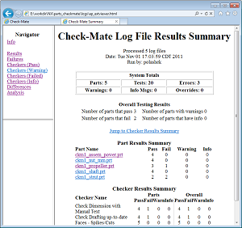

选择导出→HTML。
导航至您的 logs 文件夹。
在文件名输入框中，键入 xxx_extviewer，其中 xxx 代表您名字的首字母缩写。
点击保存。
在 Check-Mate 查看器对话框中，点击文件→退出。
将关闭 Check-Mate 查看器对话框。
在文件浏览器中浏览至您的 logs 文件夹。
您将看到多个 HTML 文件，这些文件是您导出结果数据时生成的，除了主页面之外，还有其它提供各种链接的次要 HTML 文件。
在网页浏览器中打开 xxx_extviewer.html 文件。

花费几分钟时间熟悉一下 HTML 报告，选择某些链接以查看显示的数据。
您可以拖动边框来调整导航面板的大小。
当您完成报告的查看时，关闭 HTML 报告所在的浏览器选项卡。
确保未关闭 Check-Mate 课程所在的页面。